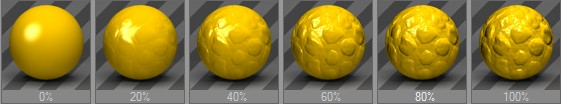
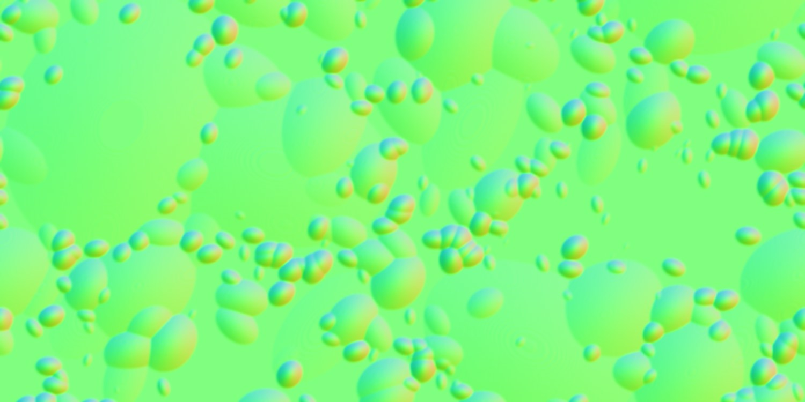
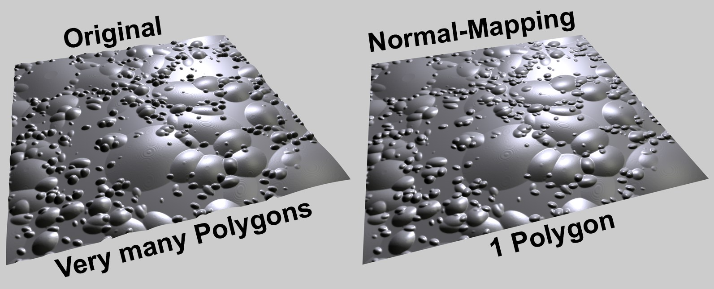
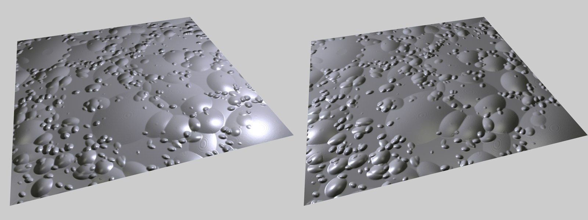

Function available in CINEMA 4D Prime, Visualize, Broadcast, Studio & BodyPaint 3D
法线

这个材质通道通过法线贴图来使用法线纹理。什么是法线贴图？
法线贴图是一种从计算机游戏发展而来的技术，它可以在很短的渲染时间内，赋予一个低多边形物体（细节级别很低）富有细节、带有视觉结构的表面。
凹凸贴图使用一个灰度位图来产生高度数据，而法线贴图使用一个包含法线方向信息的 RGB 贴图（法线可以指向各种方向）。
法线贴图看起来是这个样子的：
法线纹理算法设为对象
这些怪异的颜色包含了物体表面每个点的法线方向信息，红色、绿色、蓝色通道分别表示 X、Y、Z。法线方向不再由几何形体决定，而是由法线贴图决定。
你可以使用烘焙纹理…或烘焙对象…选项来创建法线贴图，或者使用法线生成着色器（它可以加载法线颜色贴图，通常是凹凸贴图）。
左图：使用次多边形置换的原始对象；右图：使用法线纹理的渲染结果。
如果将法线贴图添加到法线材质通道中，渲染结果接近原始的高多边形对象，尤其在灯光运动的情况下。这是因为阴影和高光会根据光源位置做出反应，渲染结果十分生动。
光源在不同位置时法线贴图的渲染效果。
另外要注意在创建结构的方法一节中介绍的其他方法。
决定了法线贴图的强度。不要使用过高的数值，因为效果会渐渐变得不真实。
通常强度越高，视角就要越垂直于表面，这样看起来才会真实。
有几种法线贴图的算法，这里不深入探讨，它们是：
- 相切：最常用的算法。法线方向根据所在的表面来决定。对于自身变形的对象来说这是最合适的算法，例如角色动画。这种贴图中主要是亮蓝色或亮绿色，这些是法线垂直于表面的区域。
- 对象：使用对象的坐标系来编码法线方向。这种贴图大部分会出现各种颜色。
- 全局：使用全局坐标系统来编码法线方向。它只适合用在没有动画的静态对象上。这种贴图也会出现各种颜色。
在选择算法时，你必须清楚创建法线贴图时使用的哪种算法，两种算法要匹配。如果要使用通过 CINEMA 4D 的烘焙纹理…功能创建的法线贴图，也要在这里使用相同的设置。
- 法线生成着色器使用的是相切
- 如果一个法线贴图是在 CINEMA 4D 中烘焙的（烘焙纹理标签），在这里要使用相同的设置。
翻转 X (红)
翻转 Y (绿)
翻转 Z (蓝)
交换 Y & Z (Y 上)
因为没有标准的创建法线贴图的算法，因此每个软件的处理方式有所不同：有些软件 Y 坐标是绿色，而有些是蓝色。为了最大程度兼容，可以使用这些设置来切换所有的颜色组成。
下列经验可以应用在最常用的相切算法中：
- 如果法线贴图大部分是亮绿色，应该启用交换 Y & Z (Y 上)。
- 如果法线贴图大部分是亮蓝色，应该禁用交换 Y & Z (Y 上)。
可以在这里设置一张纹理贴图或一个2D着色器。详情参见纹理。